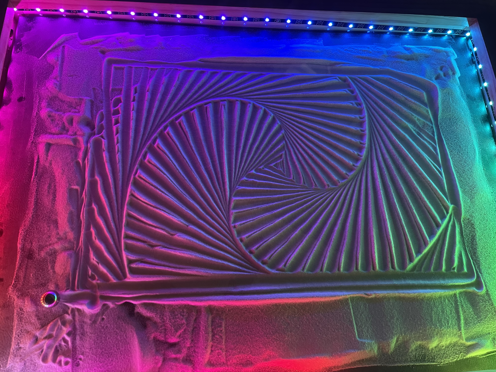
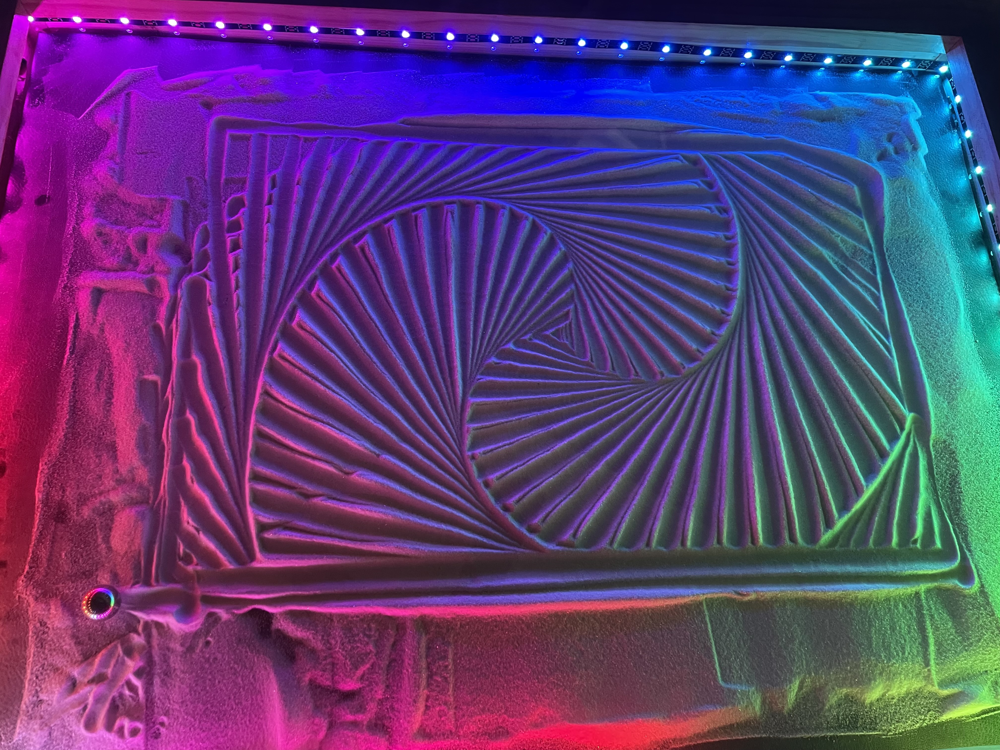

Sisyphus Table
 

“In a sense we are all Sisyphus, we have repetitive and sometimes seemingly pointless work, but even though it looks dull and boring in the end we must imagine Sisyphus happy with his life enjoying the little things and it’s multidimensionality”
(JItu Das)
This table features a marble being guided through sand to draw mesmerizing images. Then, just as Sisyphus forever pushed the boulder, it’s work begins anew with a different design being drawn over the old. Featuring a wide range of 3D printed parts along with
various electronics and cuts of wood this project is truly a culmination of many of my interests. As a whole this was a massive challenge, however the biggest difficulties came from the homing sequence, drawing surface, and motor wiring.
- This entire system is in essence a CoreXY CNC machine which, rather than a spinng tool head, carries a magnet. In order for this magnet to know its location within the work space it must perform a homing sequence where, just as with a 3D printer, it will bump several limit switches in order to confirm its location. This posed an issue when the magnet would miss the final limit switch, or not trigger at all on the first switch, and forced me to spend a lot of time making micro adjustments to each switch's position.
- Identifying the right drawing surface was difficult the material had to be stiff enough to hold up over time, but thin enough for the magnet's pull to reach the steel ball up above. I began with Luan Plywood only to find that after a month or so it began to droop and cause an awful scraping sound as the magnet rubbed on the underside. This was followed by 1/2' plywood which turned out to be way too thick and prevent the magnet from getting a firm hold on the steel ball. I eventually stumbled upon on 1/4' foam board from Hobby Lobby and found it to be perfect in terms of thickness and strength with the added benefits of being cheap and easily cut to size.
- Lastly came the challenge of dealing with the motor wiring. I would recieve seemingly arbitrary errors when running patterns and for a long time I struggled to identify why. I would later come to learn that stepper motors in their movement require the controller to constantly cycle the provided voltage. This in turn genenerates Electromagnetic Interference within the wires and was triggering false stops within the system. I solved this issue by wrapping the motor wires in grounded copper foil tape so as to sheild them from the other wires.
The entire system runs on the 3D printer web interface known as Octoprint which is hosted on a local server by an onboard Raspbery Pi. The lights are controlled via Arduino Nano and the interactive cotroll panel and the movement systems by a an Arduino UNO with a CNC shield. The main upgrade added from the base design is a powerstrip along the bottom to allow for phone chargers and various other devices to be plugged in easily. This required me to design my own mounting bracket which could be screwed into the underside of the table. The CAD files (aside from the aforemention power strip bracket), wiring diagram, and cuts list for this project were all provided by Lewis from DIY Machines however all other work on this project was completed by myself. The STLs can be found here: Sisyphus Table and Power Bracket